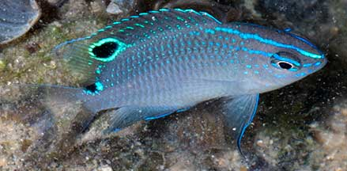
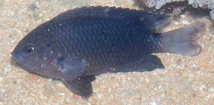
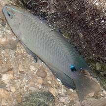
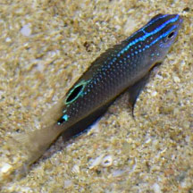
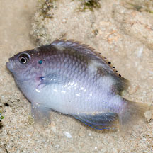
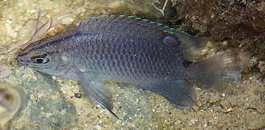
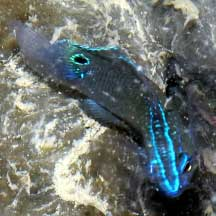
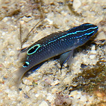
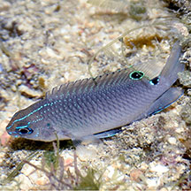
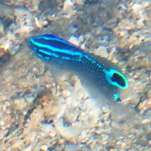

|
|
| fishes text index | photo index |
| Phylum Chordata > Subphylum Vertebrate > fishes > Family Pomacentridae |
| Threespot
damselfish Pomacentrus tripunctatus Family Pomacentridae updated Oct 2020 Where seen? This dark fish with electric blue markings is sometimes seen on some of our shores among coral rubble and near living reefs. Elsewhere, it is found in shallow bays and silty coastal reefs and other 'dead' areas, up to 3m deep. Usually alone, in holes of small rocks on sandy bottoms with coral rubble. Features: To about 20cm, those seen about 12-15cm long. Adults dull greenish black or dark grey with a blue-edged black spot on the upper tail base, usually seen under rocks at low tide. Juveniles may have an additional blue-edged black spot on the soft parts of the dorsal fin and blue lines on the head and back. |
 Tiny juvenile. Cyrene, Apr 08 |
 Juvenile. Tanah Merah, Jun 11 |
|
 Adult. Tuas, Apr 05 |
 Juvenile. Tanah Merah, Jun 11 |
| Tiny but tough: Tiny juveniles 2-3cm long can have electric blue lines (although
these little fishes may also be the juveniles of Pomacentrus cuneatus or Pomacentrus cheraphilus). These tiny fishes seem to be territorial and swim in jerky darting movements around their 'turf'. What does it eat? It eats mainly algae growing on the sea bottom. |

|
| Threespot damselfishes on Singapore shores |
On wildsingapore
flickr
|
| Other sightings on Singapore shores |
 Pulau Sekudu, May 18 Photo shared by Dayna Cheah on facebook. |
 Pulau Sekudu, May 12 Photo shared by Marcus Ng on flickr. |
 Tanah Merah, Sep 09 Photo shared by James Koh on his blog. |
 East Coast Park (B), Jun 21 Photo shared by Loh Kok Sheng on facebook. |
 Sentosa Tg Rimau, May 24 Photo shared by Loh Kok Sheng on facebook. |
 Sentosa Tg Rimau, May 24 Photo shared by Loh Kok Sheng on facebook. |
 Terumbu Semakau, May 19 Photo shared by Liz Lim on facebook. |
| Acknowledgements Identification of blue juveniles with grateful thanks to Jeffrey Low of NParks Biodiversity Centre. Links
References
|